慢慢靠近你的“春”
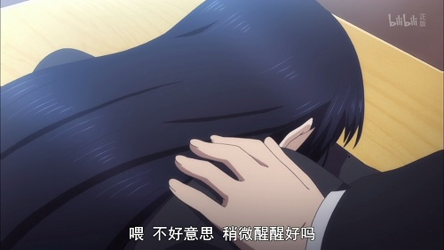
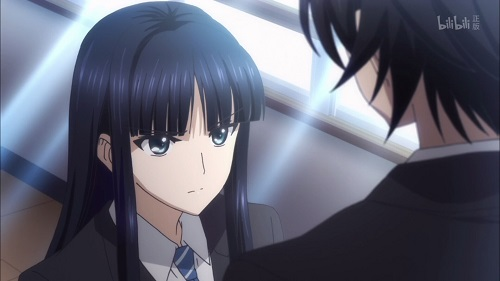
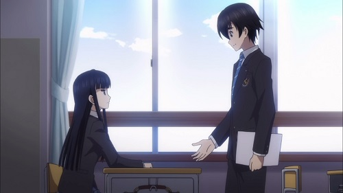
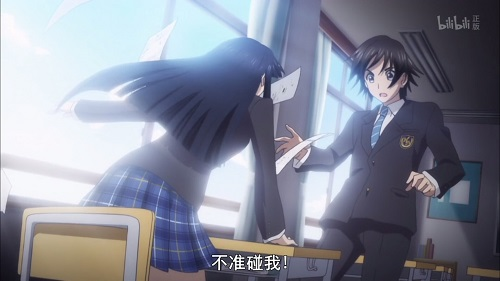
「冬马」
「……」
和纱做了个梦。
在梦中，那些和纱再也不愿想起的往事如同走马灯一般一个接着一个地从脑海中闪过。这实在是一个再糟糕不过的梦了。
「冬马…喂…不好意思，不过你还是先起来一下」
和纱抬起头，发现一个穿着制服的男生睁圆了眼，目不转睛地看着她。
他不再像最开始那样瞪着和纱看，而是用沉稳、亲切、关心对方的态度，似乎是在努力地想要解除对方的警惕。
只是，他的视线依然没有要离开和纱双眼的意思，这还是让至今为止从来都没有和别人四目相对的和纱感到不快。
他依然盯着和纱的双眼，开始在和纱的桌上堆积起了各种书和通知单。
「然后，最不能忘的就是这个。家长见面会的通知。下周就要开始了所以今天就要交给监护人」
「本来我打算直接送到你家里的，但是我还有很多其他事情…抱歉」
他明明对和纱的事情一无所知，言行却戳到了和纱的痛处，让和纱感到更加不悦了。
他那自以为亲切的强加于人的态度，让和纱觉得很讨厌。
那助长他强加于人势头的见风使舵的道歉，让和纱觉得很恼火。
总之就是对眼前的少年的所有一切都看不顺眼。
「……烦」
「唔？」
「你很烦啊」
他非常地烦人。
「我经常被人这么说，但这都是必须的事。如果觉得我烦那你一次性记住比较好哦」
「………」
但是，但是…
眼前这位男生却是一副完全不看对方的反应、既蛮横又傲慢的态度。他以为他自己是谁啊！？
「啊…对了。我们还是第一次见面啊。我叫北原春希。姑且算是Ｅ班前期的班长」
「…不要碰我」
「？ 不，我还哪里都没有碰啊」
他明明只是一个路旁的小石子一般的存在，为什么偏偏狂妄自大地想要成为自己人生中的障碍呢？而且，这颗石子既不大又不重又不尖锐，甚至还没有挡在道路中间。
在和纱心中，这样久违了的纯粹的愤怒…
「…我知道了。这些事情延后。啊，对了。这样的话，放学以后，送到你家里…」
「不要碰我！」
一瞬间，就超出了极限。
当和纱如同砸一般地打开门冲出教室的时候，包括那名男学生在内，所有人都闭上了嘴，呆呆地目送着突然变得很粗暴的和纱。
五爷的助攻
「那当然是因为，邀请他一起出去玩的女孩子会很可怜啊」
「为什么？他有什么不好吗？」
「…你也知道吧？」
——我当然很清楚。
「他的样貌也没那么对不起观众吧？没关系，服装我会帮他选好的」
「不，他的样貌确实没什么问题。但是啊，他不是很烦吗？」
「………」
——很烦。非常的烦。
「不久之前，他可是突然跑到我家来了啊？还说是从学生住址记录本上调查的」
——那家伙确实很有可能这么做。
「那天你是请假了吗？那是说你忘了什么东西？」
「我是请假了。因为前一天有演唱会所以我跑到现场去了」
「那他单单只是去探望你而已吧」
「即使如此，但是你不会觉得他神经太大条了吗？」
——对，那个男人极度缺乏对别人客气的心理。
「那他有没有进你们家吗？有没有说要你上茶？」
「他只是说了几句话之后就马上回去了。即使如此…」
——即使如此。
那种对他人过度干涉的态度，只会让他人产生厌恶之情而已…
「………抱歉，我想起我还有事情要办，先回去了」
「哎？」
「…哎？」
她本来只是在内心嘀咕着的话语，一下子从口中说了出来。
他那直到刚才为止还像羽毛一般轻浮的语气，一下子变得沉重得令人喘不过气来。
「这是我该出的钱。今天和你在一起很开心。再见」
「等、等等啊饭塚君」
她似乎也跟和纱一样感受到了那份沉重，开始显得有些犹豫地挽留起了他。
「出去玩的事情，还没有得出结论吧？最后是哪些人一起去啊？」
「啊～，说起来好像是有这么回事啊」
「你这是什么意思…」
「抱歉，我也有要紧事。下次再见」
但是他似乎已经完全没有再听她说话的意思了。
「…你在生什么气啊？」
「我说啊」
「哎…」
「你才和他同班半个月而已吧？对他只有这种程度的认识，就不要用那种很了解他的语气评价他」
「你…在说什么？」
就是啊，你在说什么啊。
会去探望只认识半个月的同班同学的人才比较奇怪吧。
「至少和他来往半年以后，才有资格去评价他。就这样，再见」
「等等，你和刚才完全判若两人啊饭塚君？喂，等等啊」
「唔…」
『饭塚君』从和纱身边快步与她擦肩而过。
但是，即使和纱不藏不躲，他也完全没有注意到和纱，只是带着一脸完全对对方失去了兴趣的干涸的表情离开了。
所以，和纱的视线反而无法从他身上移开了。
那是因为，和纱有了一种错觉，仿佛自己鄙视他的表情原封不动地还给了自己。
「…那算什么态度啊，他是笨蛋吗！」
被扔下的她的嘴里发出的骂声，也许和一天前和纱嘴里发出的声音是一样的。
因为她只是替和纱说出了和纱自己的想法。她嘴里说出的话，实在是太像和纱说的话了。
所以和纱能够理解她。不，是体会到了与她一样的感受。
那是既像面如火烧般的屈辱，又像是一盆冷水从头淋到脚一般的，无地自容的感觉。
而且偏偏，这种感受还是由于那个名为『北原春希』的班长所引起的。
「冬马」
「………」
和纱做了一个梦。
那是她变成了一只蚂蚁溺水与蜂蜜之中，这种既可以称为天堂又可以称为地狱的梦。
「冬马…喂…快点起来啊」
「…唔？」
从性命和糖分这样究极的抉择之中解放出来了的和纱，一边用手指擦着流出的泪水和口水，一边看着将自己拉回现实的人。
「早上好。今天少有地在上课前就来了呢」
「………哈啊」
「你不要叹气叹得这么大声啊」
她并不是在叹气，只是在差点说出『北原春希』的时候慌忙将那口气咽了回去。
能记住别人的全名，这对她来说已经是几年都不曾有过的事情。
「………咝」
「早上好！ 早上好冬马！预备铃就要响了所以你差不多该起来了」
「唔…唔呜呜…」
所以，在他说话的时候那困倦的态度，伸着懒腰表示没有兴趣的态度，有一半都是装出来的。
虽然她确实不想再被他继续干涉或者追问下去。
…但是，她更多的是不想被人知道，她其实对这名少年稍微有了一点兴趣。
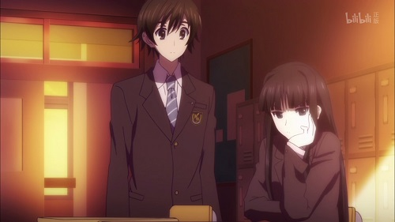
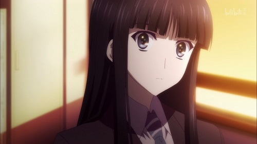
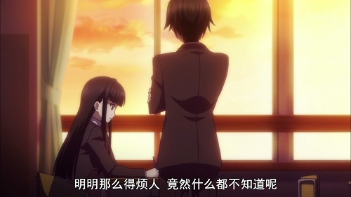
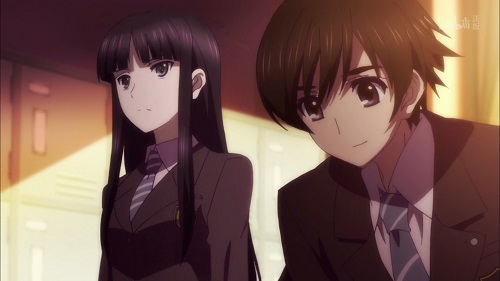
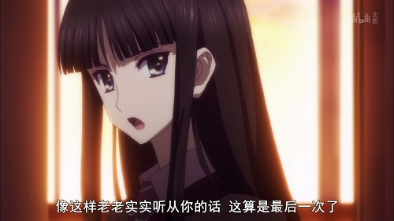
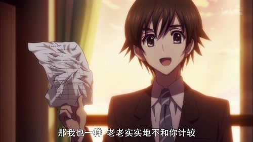
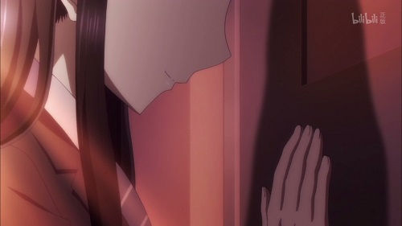
「好了，虽然你刚醒但很不好意思，志向调查表，今天必须要交了」
过于明显的干涉。令人厌烦的亲切。显而易见的多管闲事。
如果用以往的经验来对照的话，这和那些对于和纱，不，对于冬马家的地位、名声、资产虎视眈眈的大人们的居心最为相似。
但是，他的言行举止之间完全看不出一丝利己的迹象，这让和纱难以言喻地感到浑身不自在。
「不要揉成一团啊。好好写啊」
「没兴趣」
所以和纱不由自主地采取了反抗的态度。
和一个月前不同，这并不是完全拒绝对方的干涉，而是比那稍微轻微一些的反抗态度。
「…昨天，不是有三个人请假了吗？」
「我有事先电话通知然后去他们家里回收了。他们即使发烧了也好好地填了表」
「…笨蛋啊？」
他的所作所为依然让自己烦到几乎目眩。
但是这个学园第一循规蹈矩的人，却被学园第一轻浮的男生不可思议地爱戴着。
这是一对性格完全相反，两人之间完全看不到任何接点的朋友。其间的矛盾，和纱至今无法理解。
「别说这种过分的话啊。我们班的学生都很认真的」
「你以为我在说谁…」
因为无法理解，所以她在犹豫是否应该继续讨厌他。
她头脑中始终萦绕着自己是不是有了重大的理解错误这样的不安。
「我绝对不会去那里的」
她一边用针锋相对的语气和他说话，一边装作很不经意地仰视着他，但是其实，她的眼神从未从他身上离开，那句话也不过是她的自言自语。
——即使目不转睛地盯着他看，也只会觉得他很普通。完全是平均水平。
既没有丑到会让人不想看见，也没有美到会把人迷住。
…不过，拥有上述容貌的男生肯定占总数的１％都不到。
——作为证据，虽然和纱没有被他的面容迷住，但是即使一直近距离看着也不会觉得难受。
就算这样一直看下去的话，大概也…
——不，说到底，自己会这样去评价一位男生，这件事本身也许就是一个错误。
自己从没有对同年龄的…不，不论哪个年龄层的男人，从来没有一个令自己感兴趣的。
即使对方是或许是自己父亲的人也一样。
像这样，还不说对别人，就连对自身都没什么兴趣的自己竟然会想要去评价他人…
但是，如果是这样的话，那到底该看什么才好？
到底该以这家伙的什么为基准，去判断好坏呢？
而那个判断的结果，又会对自己造成怎样的影响呢…？
「不过，弄不好这可能会成为影响一生的选择，所以稍微烦恼一下也好。之后就拜托你了」
「…」
回过神来之后，和纱慌忙地将视线转移到纸上开始专心写了起来。
那是因为自己刚才的行为和思考实在太过于恶心，让自己从背脊上感到不寒而栗。
自己竟然目不转睛地看着眼前的少年，满脑子想着他的事情，这简直就像是怀春的少女一般。
「这次我就按你说的做，所以，你也要听我一个要求」
「今后，即使你被我无视也不要觉得奇怪。因为你实在是让我觉得很烦很讨厌」
——太愚蠢了，自己竟然会对他人抱有兴趣。
——不管这家伙被谁爱戴，都没有关系。
不管他有多大的人格魅力，都没有意义。
因为对于自己所在的世界来说，这些事情都不会造成任何影响。
——如果不这样让自己下定决心的话，就会尝到苦果。
毕竟，这家伙亲近的态度实在很异常。
如果稍微顺了他的意，那就不知道会被他纠缠多久了。
「我知道了…今后，即使冬马无视我，我也不会在意的」
「所以，冬马你也是，即使我黏着你说话也别在意」
「…哈啊啊？」
自己本来应该已经下定决心了。
但是在听到他那句表示放弃的话语时，和纱的表情明显变得非常不高兴了。
「早上好，冬马。今天天气真是不错啊我说」
「给我等等北原。这和约好的不…」
「因为我听了你的要求，所以你也听我一个不也挺好？」
「这哪里只是一个要求了！你这家伙脸皮厚到什么程度啊！」
「冬马…事到如今你还要说这话吗？」
和纱诅咒了。
诅咒着，对这个又烦人又喜欢套近乎的家伙竟然会稍微露出一些好脸色的，自己的愚蠢。
融化
运动会之后的一周，班上的氛围明显有了变化。
大家都已经承认北原春希是『班上必不可少的人』了。
不，他们都没有注意到自己已经承认了这一点，都只是在用和以往一样的态度对待着这位罗嗦的班长。
感受到了氛围的「变化」的人，只有和纱。
那是因为，她是班上最不必要的人。
那是因为，她是唯一一个置身事外，俯瞰着运动会事件的局外人。
而且………因为，她是对北原春希最为关注的女孩子。
因为在最近一段时间里，和纱的视线从来没有从他身上离开过。
利用着自己被班上的人当空气这一点，不管在上课还是下课的时候，都光明正大地趴在桌子上装睡，从手臂的缝隙中偷看着他的侧脸，听着他周围的人们的窃窃私语。
「早上好，冬马。还有，生日快乐」
「！？」
「是今天吧？五月二十八日」
「……」
「生日快乐。不过，由于我是四月出生，比你年长，所以也不会怎么孝敬你就是了」
「………」
所以，当她被北原这样打招呼的那天，她只能拼命地将冲到了嗓子眼的『你、你从哪里查到的啊你这个混蛋跟踪狂！』咽了下去，以比平时更快的脚步离开了现场。
在两天之后，当她看见给其他人庆祝生日的北原时，她终于回想起了北原对谁都会用一样的态度这个事实，接着打从心底里庆幸自己没有说出那种自作多情的话。
由于太过庆幸，导致她全力踢飞了教室里的垃圾箱。
就像这样，不管北原怎么积极地搭话，和纱也只是一直采取无视的态度。明明是这样的，但是事态却没能朝和纱所期望的方向发展。
那些被他洗脑了的人们，不知何时起也变得会用温暖的视线看着自己了。
事实上，『冬马同学的事情就交给北原君好了』这句令人十分不愉快的话语，也开始围绕在自己和北原周围了。
尤其是，当她听到那位称北原为『班长君』的本应很蔑视他的女同学的口中说出这句话的时候，即使是孤高的和纱，也因为那种孤立无援的绝望感而夜不能寐。
因为这些，会主动来跟自己说话的同班同学的数量明显减少了…
因为这些，唯一会主动和自己说话的同班同学的烦人程度有了飞跃性地提升。
就这样，北原假装是受信者们所迫，每天充满义务感地与和纱说话、干涉她、担心她、忠告她，并且在各种场合下从老师和校方手中袒护她。
和纱几乎已经被他逼到忍无可忍了，甚至好几次都想直接喊出『你是对我有意思吗』这种不论是对他的尊严还是对自己的体面都会造成致命损伤的话语了。
——已经到极限了。
必须要和那个笨蛋谈一次了。
让他以后再也不会干涉自己。让他以后再也不会和自己说话。
让他以后再也不会迷惑自己。
如果他还是不听的话，那就只能动用武力解决问题了。
因为，自己已经到极限了。
甚至想要将心中的一切，都向他倾诉了…
“恩将仇报”的冬马
「冬马，我说啊，你到底想给北原增添多少负担才甘心啊！」
「………哎？」
但是，怀着这种想法的和纱，却在完全出乎意料的地方受到了北原派人士的干涉。
「你好像不管什么事情都很受他照顾啊」
「…我不知道。我没有拜托他」
「在这之前的升学调查表好像也只有你一个人晚交了啊。而且你还让他故意说谎说自己记错了提交日期吧？」
「我都说了，我没有做这种事…是班长他自己这么说的」
『而且，我从来没有听说过一个学生独占一间音乐室这种事情』
——我又没有拜托你们。是你们自己塞给我的。
『如果你的母亲知道你现在这副样子，她会怎么想啊…』
——和我母亲没有关系吧。
『如果我是你的话，肯定会羞愧得无颜面对老师和家长们了』
——我和你这种人不一样。
『要不就拼命学习努力跟上大家，要不就…』
——对，用不着你说。
和纱使劲将办公室的门关上以后，以气愤填膺无处发泄的气势在走廊上走着。
就像这样，明明自己已经完全酝酿出了一种令人难以接近的氛围，但是他还是如同往常一样不看人脸色，不看现场氛围，脑袋不想事地靠近自己。
「老师跟你说了些什么？好像说了很久啊…」
「………」
什么叫「跟你说了些什么啊」，我已经受够了。
在那之后，班主任老师也只是以『不要再给北原添麻烦了』这种附和诹访的态度，继续苛责着和纱。
不管是老师，还是同学，还是班长…
能够普通地无视和纱的人，一个也没有。
「没关系的，第一学期的成绩是可以补回来的。而且还有暑假可以利用，只要现在亡羊补牢的话肯定没问题。要不我…」
「哼！」
「哎…」
所以和纱，也和往常一样。
不论对谁，都露出了獠牙。
「………」
在对他射出了连自己都觉得太过冷淡的视线之后，马上就隐去了一切表情，旁若无人地从他眼前走了过去。
「啊，啊…冬、马？」
这一次，北原只能呆呆地目送和纱了。
那个多管闲事的，不会看氛围的男生，就像和自己初次见面时那样，呆立不动了。
所以和纱相信，这一次终于把事情终结了。
他肯定不会再和自己说话了。
如果自己那如同施恩一般的好意，被对方如此明显地恩将仇报的话，不论谁都…
「…这个混蛋」
和纱的这句自言自语，到底是对他所说，还是对自己所说，连她本人也不知道。
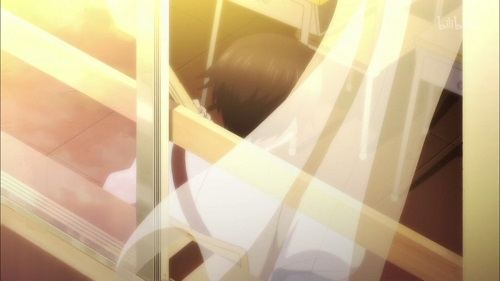
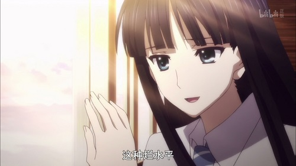
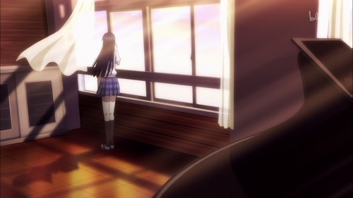
第二音乐室里陪伴冬马的小小噪音
在那天的第二音乐室里，进行了十分激昂的音乐会。
在这所学校里，自己的容身之处，只有这里而已。
从明天开始就是暑假了。
在那个节日中，和纱的『想要一个人独处』的愿望，终于实现了。
那是因为，她终于排除了那个唯一会主动向自己搭话的烦人的班长。
从今天开始，两人会有一个多月不能见面，在这期间，他也无法填补两人之间留下的沟壑，两人的距离只会越来越远。
不知何时，钢琴的声音停了下来。
在想象着那无比快乐的暑假的时候，手指就停了下来。
…不知为何，那自己努力获得的孤独，却让自己感到很心痛。
从隔壁传来了吉他声。
「………弹得真烂」
在她说出这句自言自语的时候，虽然她的嘴角确实微微上扬了，但是她的眼角却歪曲成了一种实在难以说是微笑的状态。
那是她从第一学期起就听到过很多次的，始终没什么进步的烂透了的吉他。
这个音色经常在和纱的演奏之中插进来，不断地重复着各种错误，即使和纱停止弹奏它也不会停止，但是又经常会在和纱演奏的途中自行放弃。就是这种没有任何协调性的自我中心的练习。
对于和纱来说，这个明显很碍事的声音有时又会附和自己的演奏。对于这种自作主张的行为，和纱每次都只能是显得无可奈何。
但是…
「就差一点了…」
今天的『Ｗｈｉｔｅ Ａｌｂｕｍ』，正在以勉强可以算是零失误的状态进行着。
现在，能陪在和纱身边的，只有隔壁那笨拙的吉他而已。
冬马和纱，很讨厌天空。
不论是老师，还是学生，甚至周围世界中的一切，她都很讨厌。
从今天起，有一段时间不会见面了的，态度十分亲热的男学生，她也很讨厌。
但是冬马和纱…唯独不那么讨厌现在陪伴着自己的，这份小小的噪音。